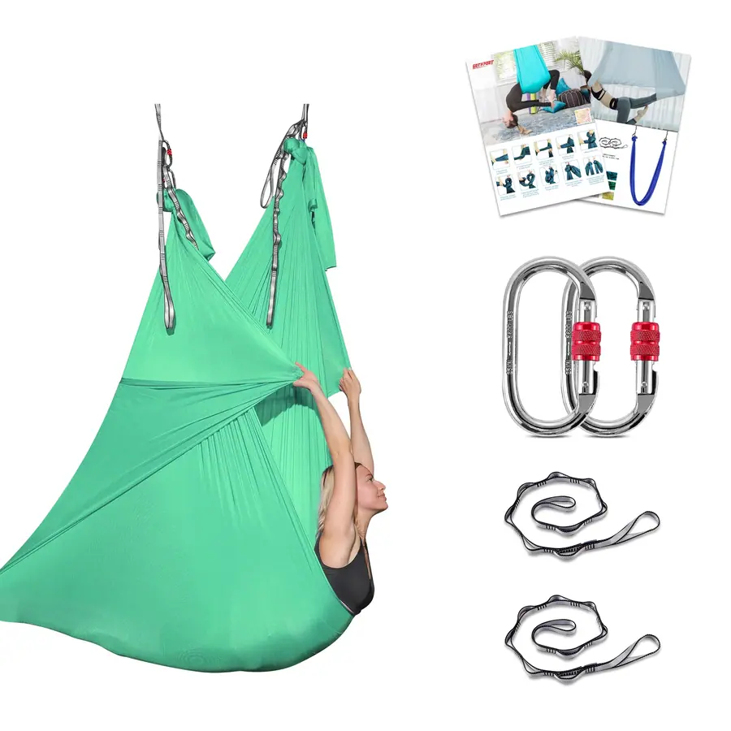

エアリアルヨガハンモック、ポリエステル、1*2.6m / 5*2.6m またはカスタマイズ可能。生地、色、プリントはご注文に応じて製作いたします。
| 素材 | ポリエステル |
|---|---|
| サイズ | 1*2.6m / 5*2.6m またはカスタマイズ |
| 最小発注数量（MOQ） | 100個 |
| 生地の重さ | 100gsm |
| 色 | カスタマイズ |
| 特集 | 耐久性がある |
| ロゴ | カスタマイズ可能 |
| コンプライアンス | ROHS / CE / ISO 9001 / BSCI / REACH |
210Tナイロンタフタとポリエステル製のエアリアルハンモック。逆さ吊り作業に対応する耐荷重試験を経ており、補強された縫い目とデイジーチェーン式の取り付けポイントを備えています。グラデーション、無地、オンブレの各染色ロットにはスタジオブランドのカラーが採用されており、キットにはストラップとカラビナが付属しています。
OEM/ODMを全面的にサポート：素材、サイズ、厚さ、色、ツートンカラー、ロゴ印刷、エンボス加工、パッケージング。ご指定の仕様に基づき、実物サンプルを7日以内にご用意いたします。
エアリアルスタジオ、ウェルネスブランド、リトリートキット、およびトレーニングスクールの備品向け。